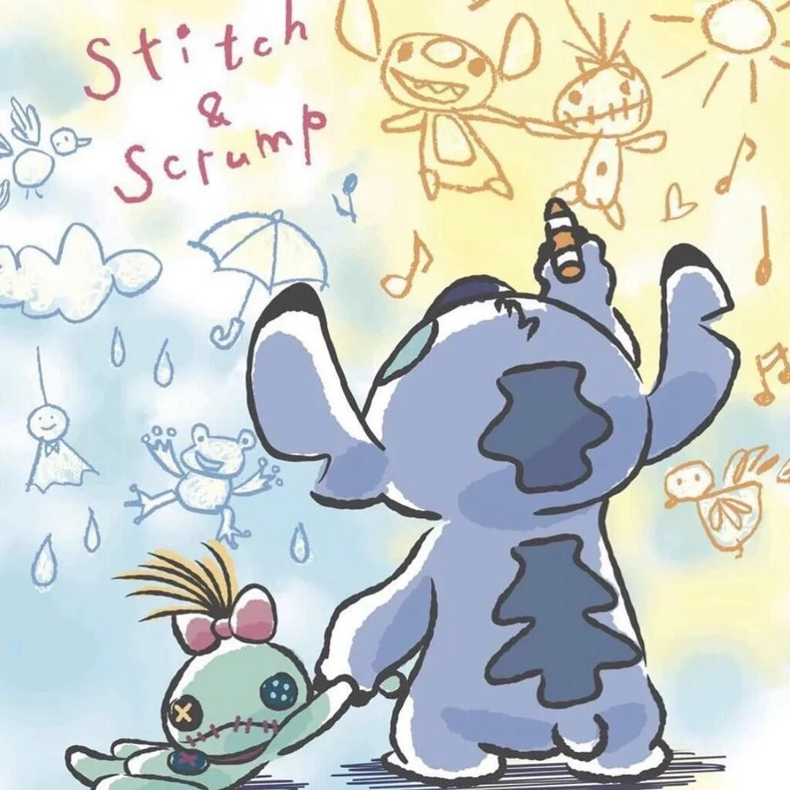

星 际 宝 贝

一个夏威夷小女孩莉萝(黛薇·雀丝配音)和一只外太空生物史迪奇(克里斯·桑德斯配音)的故事。
5岁女孩莉萝聪明善良，她最爱听猫王的老歌，也一直梦想拥有一只属于自己的宠物狗。一天，莉萝在姐姐的帮助下收留了一只流浪狗，她给这只狗起名叫史迪奇，
并希望史迪奇能够给自己的生活增添一份乐趣。但是莉萝万万没有想到的是，史迪奇并不是可怜的流浪狗，而是来自外星球的长着六支脚的危险分子，在流放中偷跑到祖柜地球上来的。
为了在地球上隐藏身份，史迪奇只能把自己的两只脚藏起来，外表看起来和别的小狗一样。在和莉萝相处的日子里，史迪和丽洛慢慢建立了深厚的感情。然与此同时，制造出史迪奇的外星人也
发现他逃走了，于是立刻全力出动，即使要搜遍宇宙也要将其逮捕归案!>
当外星人终于在地球上发现了伪装的史迪奇时，他们绑架了莉萝想逼史迪奇就范，为了救回自己的好朋友，也
了证明自己不是无可救药的危险分子，史迪奇只有使出浑身解数，放手归微说拜一搏了。
创作背景
它是三部在佛罗里达州奥兰多的迪士尼制片厂生产的电影中的第二部，另匙巴船外两部则是《花木兰》和《熊的传说》。
本片的配音演员大卫·奥登·史帝尔斯和黛薇·雀丝也参与了由同一影片公司华特迪士尼制作的《千与千寻》的英文版本的配音 。
这部动画片画面一改当时流行的三维动画制作，改用二维的水彩画风，还原了动画片原始的真实。
《星际宝贝》是迪士尼少数几个故事背景取自现代的电影之一，多主射尝其它还包括了1961年的《101斑点狗》、1977年的《救难小英雄》、1990年的《救难小英雄澳洲历险记》以及1988年的《奥丽华历险记》等。
由《星际宝贝》愉验寻电影改编的同名《星际宝贝》电视卡通影集，讲述的是莉萝和史迪奇寻找625个太空实验品的旅程。由《星际宝贝》改编的《星际宝贝2:史迪奇》由原本电影故事来延续，故事的设定是紧接原电影情节，相当于续集 。